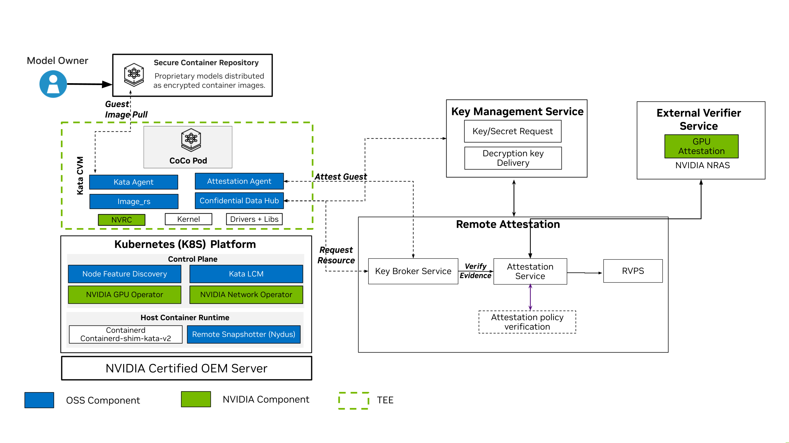
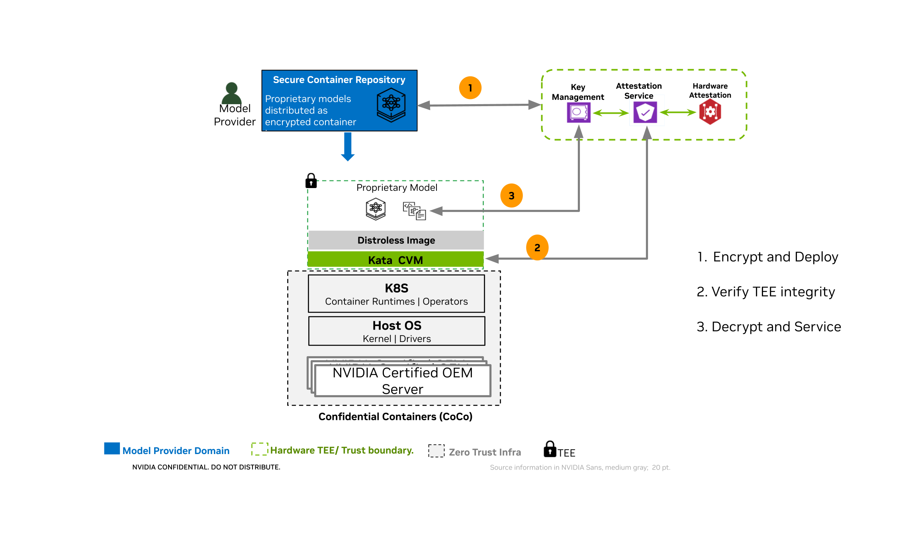

NVIDIA Confidential Containers Overview (Early Access)#
Early Access
Confidential Containers are available as Early Access (EA) with curated platform and feature support. EA features are not supported in production and are not functionally complete. API and architectural designs are not final and may change.
Overview#
NVIDIA GPUs power the training and deployment of Frontier Models—world-class Large Language Models (LLMs) that define the state of the art in AI reasoning and capability.
As organizations adopt these models in regulated industries such as financial services, healthcare, and the public sector, protecting model intellectual property and sensitive user data becomes essential. Additionally, the model deployment landscape is evolving to include public clouds, enterprise on-premises, and edge. A zero-trust posture on cloud-native platforms such as Kubernetes is essential to secure assets (model IP and enterprise private data) from untrusted infrastructure with privileged user access.
Securing data at rest and in transit is standard. Protecting data in-use remains a critical gap. Confidential Computing (CC) addresses this gap by providing isolation, encryption, and integrity verification of proprietary application code and sensitive data during processing. CC uses hardware-based Trusted Execution Environments (TEEs), such as AMD SEV-SNP / Intel TDX technologies, and NVIDIA Confidential Computing capabilities to create trusted enclaves.
In addition to TEEs, Confidential Computing provides Remote Attestation features. Attestation enables remote systems or users to interrogate the security state of a TEE before interacting with it and providing any secrets or sensitive data.
Confidential Containers (CoCo) is the cloud-native approach of CC on Kubernetes. The Confidential Containers architecture leverages Kata Containers to provide the sandboxing capabilities. Kata Containers is an open-source project that provides lightweight Utility Virtual Machines (UVMs) that feel and perform like containers while providing strong workload isolation. Along with the Confidential Containers project, Kata enables the orchestration of secure, GPU-accelerated workloads in Kubernetes.
Architecture Overview#
NVIDIA’s approach to the Confidential Containers architecture delivers on the key promise of Confidential Computing: confidentiality, integrity, and verifiability. Integrating open source and NVIDIA software components with the Confidential Computing capabilities of NVIDIA GPUs, the Reference Architecture for Confidential Containers is designed to be the secure and trusted deployment model for AI workloads.

High-Level Reference Architecture for Confidential Containers
The key value proposition for this architecture approach is:
Built on OSS standards - The Reference Architecture for Confidential Containers is built on key OSS components such as Kata, Trustee, QEMU, OVMF, and Node Feature Discovery (NFD), along with hardened NVIDIA components like NVIDIA GPU Operator.
Highest level of isolation - The Confidential Containers architecture is built on Kata containers, which is the industry standard for providing hardened sandbox isolation, and augmenting it with support for GPU passthrough to Kata containers makes the base of the Trusted Execution Environment (TEE).
Zero-trust execution with Attestation - Ensuring the trust of the model providers/data owners by providing a full-stack verification capability with Attestation. The integration of NVIDIA GPU attestation capabilities with Trustee based architecture, to provide composite attestation provides the base for secure, attestation based key-release for encrypted workloads, deployed inside the TEE.
Use Cases#
The target for Confidential Containers is to enable model providers (Closed and Open source) and Enterprises to leverage the advancements of Gen AI, agnostic to the deployment model (Cloud, Enterprise, or Edge). Some of the key use cases that CC and Confidential Containers enable are:
Zero-Trust AI & IP Protection: You can deploy proprietary models (like LLMs) on third-party or private infrastructure. The model weights remain encrypted and are only decrypted inside the hardware-protected enclave, ensuring absolute IP protection from the host.
Data Clean Rooms: This allows you to process sensitive enterprise data (like financial analytics or healthcare records) securely. Neither the infrastructure provider nor the model builder can see the raw data.

Sample Workflow for Securing Model IP on Untrusted Infrastructure with CoCo
Software Components for Confidential Containers#
The following is a brief overview of the software components for Confidential Containers.
Kata Containers
Acts as the secure isolation layer by running standard Kubernetes Pods inside lightweight, hardware-isolated Utility VMs (UVMs) rather than sharing the untrusted host kernel. Kata containers are integrated with the Kubernetes Agent Sandbox project to deliver sandboxing capabilities.
NVIDIA GPU Operator
Automates GPU lifecycle management. For Confidential Containers, it securely provisions GPU support and handles VFIO-based GPU passthrough directly into the Kata confidential VM without breaking the hardware trust boundary.
The GPU Operator deploys the components needed to run Confidential Containers to simplify managing the software required for confidential computing and deploying confidential container workloads:
NVIDIA Confidential Computing Manager (cc-manager) for Kubernetes - to set the confidential computing (CC) mode on the NVIDIA GPUs.
NVIDIA Sandbox Device Plugin - to discover NVIDIA GPUs along with their capabilities, to advertise these to Kubernetes, and to allocate GPUs during pod deployment.
NVIDIA VFIO Manager - to bind discovered NVIDIA GPUs to the vfio-pci driver for VFIO passthrough.
NVIDIA Kata Manager for Kubernetes - to create host-side CDI specifications for GPU passthrough.
Kata Deploy
Deployment mechanism (often managed via Helm) that installs the Kata runtime binaries, UVM kernels, and TEE-specific shims (such as kata-qemu-nvidia-gpu-snp or kata-qemu-nvidia-gpu-tdx) onto the cluster’s worker nodes.
Node Feature Discovery (NFD)
Bootstraps the node by advertising the node features via labels to make sophisticated scheduling decisions, like installing the Kata/CoCo stack only on the nodes that support the CC prerequisites for CPU and GPU. This feature directs the Operator to install node feature rules that detect CPU security features and the NVIDIA GPU hardware.
Trustee
Attestation and key brokering framework (which includes the Key Broker Service and Attestation Service). It acts as the cryptographic gatekeeper, verifying hardware/software evidence and only releasing secrets if the environment is proven secure.
Snapshotter (e.g., Nydus)
Handles the “Guest Pull” functionality. It bypasses the host to fetch and unpack encrypted container images directly inside the protected guest memory, keeping proprietary code hidden.
Kata Agent Policy
Runs inside the guest VM to manage the container lifecycle while enforcing a strict, immutable policy based on Rego (regorus) for allow-list. This blocks the untrusted host from executing unauthorized commands, such as a malicious kubectl exec.
Confidential Data Hub (CDH)
An in-guest component that securely receives decrypted secrets from Trustee and transparently manages encrypted persistent storage and image decryption for the workload.
NVRC (NVIDIA runcom)
A minimal, chiseled and hardened init system that securely bootstraps the guest environment, life cycles the kata-agent, provides health checks on started helper daemons and launches the Kata Agent while drastically reducing the attack surface.
Software Stack and Component Versions#
The following is the component stack to support the open Reference Architecture (RA) along with the proposed versions of different SW components.
Category |
Component |
Release/Version |
|---|---|---|
HW Platform |
GPU Platform |
Hopper 100/200
Blackwell B200
Blackwell RTX Pro 6000
|
CPU Platform |
AMD Genoa/ Milan
Intel ER/ GR
|
|
Host SW Components |
Host OS |
25.10 |
Host Kernel |
6.17+ |
|
Guest OS |
Distroless |
|
Guest kernel |
6.18.5 |
|
OVMF |
edk2-stable202511 |
|
QEMU |
10.1 + Patches |
|
Containerd |
2.2.2 + |
|
Kubernetes |
1.32 + |
|
Confidential Containers Core Components |
NFD |
v0.6.0 |
|
v25.10.0 and higher |
|
|
v0.18.0 |
Cluster Topology Considerations#
You can configure all the worker nodes in your cluster for running GPU workloads with confidential containers, or you can configure some nodes for Confidential Containers and the others for traditional containers. Consider the following example where node A is configured to run traditional containers and node B is configured to run confidential containers.
Node A - Traditional Containers receives the following software components |
Node B - Kata CoCo receives the following software components |
|---|---|
|
|
This configuration can be controlled via node labelling, as described in the GPU Operator confidential containers deployment guide.
Supported Platforms#
Following is the platform and feature support scope for Early Access (EA) of Confidential Containers open Reference Architecture published by NVIDIA.
Component |
Feature |
|---|---|
GPU Platform |
Hopper 100/200 |
TEE |
AMD SEV-SNP only |
Feature Support |
Confidential Containers w/ Kata; Single GPU Passthrough only |
Attestation Support |
Composite Attestation for CPU + GPU; integration with Trustee for local verifier. |
Refer to the Confidential Computing Deployment Guide at the Confidential Computing website for information about supported NVIDIA GPUs, such as the NVIDIA Hopper H100, and specifically to CC deployment guide for SEV-SNP for setup specific to AMD SEV-SNP machines.
The following topics in the deployment guide apply to a cloud-native environment:
Hardware selection and initial hardware configuration, such as BIOS settings.
Host operating system selection, initial configuration, and validation.
When following the cloud-native sections in the deployment guide linked above, use Ubuntu 25.10 as the host OS with its default kernel version and configuration.
The remaining configuration topics in the deployment guide do not apply to a cloud-native environment. NVIDIA GPU Operator performs the actions that are described in these topics.
Limitations and Restrictions for CoCo EA#
Only the AMD platform using SEV-SNP is supported for Confidential Containers Early Access.
GPUs are available to containers as a single GPU in passthrough mode only. Multi-GPU passthrough and vGPU are not supported.
Support is limited to initial installation and configuration only. Upgrade and configuration of existing clusters to configure confidential computing is not supported.
Support for confidential computing environments is limited to the implementation described on this page.
NVIDIA supports the GPU Operator and confidential computing with the containerd runtime only.
NFD doesn’t label all Confidential Container capable nodes as such automatically. In some cases, users must manually label nodes to deploy the NVIDIA Confidential Computing Manager for Kubernetes operand onto these nodes as described in the deployment guide.